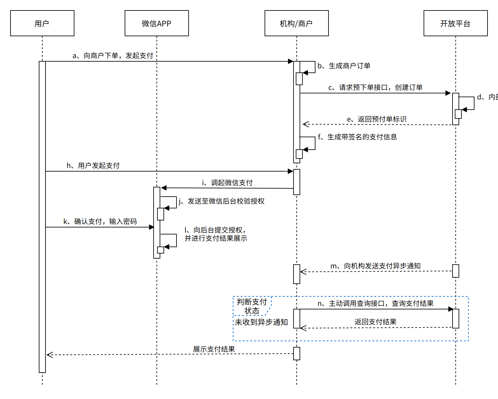

公众号⽀付是微信JSAPI⽀付⽅式的⼀种，是指商⼾通过调⽤微信⽀付提供的JSAPI接⼝（调⽤此接⼝需要上送商⼾公众号编号，即sub_appid），在⽀付场景中调起微信⽀付模块完成收款。
产品特⾊
略
应⽤场景
商⼾已有H5商城⽹站，⽤⼾通过消息或扫描⼆维码在微信内打开⽹⻚时，可以调⽤微信⽀付完成下单购买的流程。
操作流程：
步骤⼀ ，商⼾下发图⽂消息或者通过⾃定义菜单吸引⽤⼾点击进⼊商⼾⽹⻚。
步骤⼆ ，进⼊商⼾⽹⻚，⽤⼾选择购买，完成选购流程。
步骤三 ，调起微信⽀付控件，⽤⼾开始输⼊⽀付密码。
步骤四，密码验证通过，⽀付成功。商⼾后台得到⽀付成功的通知。
步骤五，返回商⼾⻚⾯，显⽰购买成功。该⻚⾯由商⼾⾃定义。
步骤六 ，微信⽀付公众号下发⽀付凭证。
⽀付流程
准⼊条件
涉及接⼝
| 功能名称 | 功能列表 | 描述 | 备注 |
|---|---|---|---|
| ⼩程序⽀付 | 主扫⽀付（C扫B）接⼝ | 商⼾系统先调⽤该接⼝在微信⽀付服务后台⽣成预⽀付交易单，返回正确的预⽀付交易会话标识后,⽣成⼩程序交易串调起⽀付。 | transType字段上送值为51 |
| 关单接⼝ | 以下情况需要调⽤关单接⼝： 1.商⼾订单⽀付失败需要⽣成新单号重新发起⽀付，要对原订单号调 ⽤关单，避免重复⽀付。 2.系统下单后，⽤⼾⽀付超时，系统退出不再受理，避免⽤⼾继续， 请调⽤关单接⼝。 |
关单没有时间限制，建议在订单⽣成后间隔⼏分钟（最短5分钟）再调⽤关单接⼝，避免出现订单状态同步不及时导致关单失败。 | |
| 退款接⼝ | 当交易发⽣之后⼀年内，由于买家或者卖家的原因需要退款时，卖家可以通过退款接⼝将⽀付⾦额退还给买家，微信⽀付将在收到退款请求并且验证成功之后，将⽀付款按原路退还⾄买家账号上。 | 1.交易时间超过⼀年的订单⽆法提交退款。 2.微信⽀付退款⽀持单笔交易分多次退款（不超50次），多次退款需要提交原⽀付订单的商⼾订单号和设置不同的退款单号。申请退款总⾦额不能超过订单⾦额。⼀笔退款失败后重新提交，请不要更换退款单号，请使⽤原商⼾退款单号。 3.每个⽀付订单的部分退款次数不能超过50次。 4.申请退款接⼝的返回仅代表业务的受理情况，具体退款是否成功，需要通过退款查询接⼝获取结果。 |
|
| 交易订单查询 | 商⼾可以通过查询订单接⼝主动查 询订单状态，完成下⼀步的业务逻辑。查询订单状态可通过微信⽀付订单号或商⼾订单号两种⽅式查询 | 退款交易也调⽤此接⼝查询退款交易情况，lklOrderNo字段上送退款订单号。 | |
| ⽀付通知 | 微信⽀付通过⽀付通知接⼝将⽤⼾⽀付成功消息通知给商⼾ |
必要业务参数
| 字段 | 说明 | 是否必填 | 类型 | 备注 |
|---|---|---|---|---|
| mercId | 商户号 | M | String(32) | 拉卡拉分配的商户号 |
| termNo | 终端号 | M | String(32) | 拉卡拉分配的终端号 |
| payMode | ⽀付模式 | M | String(32) | ⽀付模式： 1.微信：WECHAT 2.⽀付宝：ALIPAY 3.银联：UQRCODEPAY |
| openId | ⽤⼾⼦标识：sub_openid | C | String(128) | transType=51时（即公众号⽀付）， 注：建议使⽤静默授权 微信公众号为⽤⼾的 openid ⽀付宝服务窗为⽤⼾的 buyer_id 银联JS⽀付为⽤⼾的 userId，获取⽤⼾授权返回00时必传 翼⽀付不需要上送 拉卡拉钱包为⽤⼾的userid |
| spbillCreate Ip | 付款⽅IP | M | String(32) | ⽤⼾的客⼾端IP，格式如36.45.36.95 |
| transType | 接⼊⽅式 | M | String(2) | 51:JSAPI（微信公众号⽀付，⽀付宝服务窗⽀付， 银联JS⽀付，数字货币钱包⽀付，拉卡拉钱包） |
| appId | ⼦商⼾公众账号ID： sub_appid | C | String(32) | transType=51时（即公众号⽀付），有此值时，此参数必传，只对微信⽀付有效 |
接⼊准备
1.选择接⼊模式
开放平台接⼊⾝份分为三类：商⼾、机构/代理商、ISV服务商，三者均需要有开发能⼒。
2.申请参数
3.证书申请